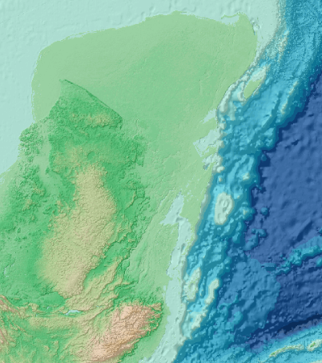

Visualizador de Ceniza Volcánica
Tutoriales
Vistas
Descargas
Capas
Consulta
Simbología
Ingrese las fechas correspondientes para realizar su consulta
Inicio:
Fin:
Consulta por Área de Sargazo
Área en kilómetros cuadrados
Mayor que...
Mayor igual que...
Menor que...
Menor igual que...
Igual que...
Área de sargazo total del
Área de sargazo seleccionada:
Vectoriales
Marcadores
Volcánes
Datos
Ceniza
Última detección {{ sargazoUltimo.fecha }}
Limites
Zona de volcánes
Raster
Sentinel-2 Color Verdadero
Colima
Popocatépetl
Tacana
Chichon
Sentinel-2 SWIR
Colima
Popocatépetl
Tacana
Chichon
Goes-16/ABI
Color Verdadero en día + Banda 13 (10.3 µm) en la noche
Mapas Base

Simbología
X
Para poder ingresar a las descargas, necesitará de un usuario y contraseña que se le proporcionará enviando un correo a lanot@igg.unam.mx
Si usted ya cuenta con un usuario y contraseña dar clic en ingresar.
Ingresar
Tabla de atributos de los polígonos de sargazo
Id
IdPolígono
Tile
Fecha
Fecha_día
Área (km2)
Dist. costa(km)
{%for i in infotab%}
{%for j in i%}
{{j}}
{%endfor%}
{%endfor%}
Seleccione el tipo de medida
Distancia
Área
Último paso Sentinel-2:
{{ sargazoUltimo.fechaCatalogo }}